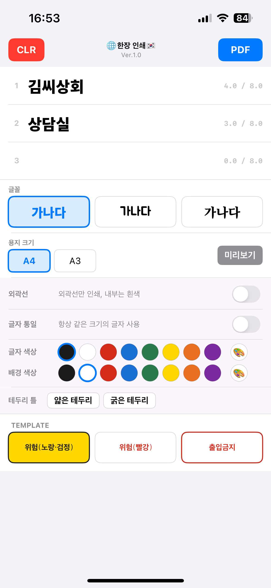

lamiliuq works
ペラいち印刷印刷
One-Sheet PDF Maker
入力した文字を1枚の紙にバランス良く自動配置してPDFを作成するiPhoneアプリ。注意書き・案内・ドアの掲示・商品POPを、すばやく作れます。
iPhone
iOS 17.6+
無料（PRO 買い切り ¥390）
1枚の紙に、行数・文字数に合わせて最適なバランスで自動配置
使い方
1
文字を入力する
入力欄は3行。1行あたり全角換算8文字までを目安に入力します。超えた部分は赤く表示され、印刷には反映されません。
例：調整中 / 鈴木商会様＋商談室 / 高校野球都大会＋東京第五高校＋野球部員控室
2
フォントと用紙サイズを選ぶ
ゴシック・POP・明朝の3書体から選択。用紙はB5・A4・B4・A3の横向きに対応しています。
3
プレビューで確認する
「プレビュー」ボタンで仕上がりを確認できます。文字の大きさは行数・文字数に応じて自動で調整されます。
4
PDFを作成して印刷する
「PDF」ボタンをタップするとPDFが作成され、共有メニューが開きます。AirPrint・Canonプリント・Epsonなど各社プリンターアプリへ送信できます。
文字の大きさの決まり方
ぺらイチ印刷は「1枚の紙に同じ色・同じフォント・同じ大きさの文字を、最良のバランスで自動配置する」アプリです。バランス調整や配置を気にすることなく、最短で掲示物を作れます。
文字の大きさは行数でおおよその上限が決まり、さらに各行の文字数に応じて、はみ出さない範囲でできるだけ大きく自動調整されます。1行だけの場合は特に大きく表示されます。
テンプレート
緊急時にお使いください。タップですぐにPDFを作成し、プリンターと共有できます。
ここだけカラーを無料開放しています。有料機能（文字色・背景色・白抜き・囲み枠）のお試しとしてもご利用いただけます。
PRO機能
無料版
- 文字入力・PDF作成
- 全フォント利用可
- B5〜A3 全サイズ
- テンプレート3種
- 黒文字・白背景
PRO — ¥390 買い切り
- 文字色（8色）
- 背景色（8色）
- 白抜き文字
- 文字サイズ統一（常に同じ大きさ）
- 囲み枠（細枠・太枠）
- 絵文字対応
- 広告非表示
その他の機能
🌐 言語の切り替え
トップバーのアプリ名をタップするたびに 🇯🇵→🇨🇳→🇹🇼→🇰🇷→About の順に切り替わります。言語を切り替えると入力欄がクリアされます。
✂️ はみ出した文字について
1行の文字数が目安を超えると、超えた部分から赤く表示されます。赤い部分は印刷には含まれません。プレビューで仕上がりを確認できるため、エラーメッセージは表示しません。
🖨️ 対応プリンター
AirPrint対応プリンター全般のほか、Canon PRINT・Epson Smart Panel・Brother Mobile Connect など各メーカーのアプリから印刷できます。コンビニのネットプリントにも対応しています。
📄 PDFの保存先
作成したPDFはiPhoneの「ファイル」アプリに保存するほか、Dropbox・Google Drive などのクラウドストレージにも送信できます。
🔤 フォントについて
使用フォントはすべてSIL OFLライセンスのオープンソースフォントです。M PLUS 1p・Noto Serif JP・Rounded Mplus 1cほか全12書体をアプリに内蔵しています。
使用方法
1
输入文字
输入框共3行，每行以全角换算8个字符为大致上限。超出的部分会显示为红色，不会反映在打印内容中。
例：调整中 / 王氏贸易＋洽谈室 / 乒乓球大会＋第五高中＋休息室
2
选择字体和纸张大小
从黑体、POP、宋体三种字体中选择，支持A4、A3横向纸张尺寸。
3
预览效果
点击「预览」按钮确认效果。文字大小会根据行数和字数自动调整。
4
创建PDF并打印
点击「PDF」按钮生成PDF，在共享菜单中发送到打印机应用。
文字大小的决定方式
单页打印是一款「在一张纸上自动以相同颜色、相同字体、相同大小，最佳平衡排版文字」的应用。无需在意排版与平衡，即可最快制作出标识物。
快捷模板
紧急情况下请使用。轻触即可立即创建PDF并与打印机共享。
此处颜色功能免费开放。也可作为PRO付费功能（文字颜色、背景颜色、空心字、边框）的体验使用。
PRO功能
免费版
- 文字输入・PDF创建
- 全部字体可用
- A4・A3纸张
- 3种快捷模板
- 黑字・白底
PRO — CN¥15 买断
- 文字颜色（8色）
- 背景颜色（8色）
- 空心字
- 字号统一（始终相同大小）
- 边框（细框・粗框）
- 表情符号支持
- 去除广告
使用方式
1
輸入文字
輸入欄共3行，每行以全形換算8個字元為大致上限。超出的部分會顯示為紅色，不會反映在列印內容中。
例：調整中 / 陳記商行＋洽談室 / 高中棒球大賽＋第五高中＋休息室
2
選擇字型和紙張大小
從黑體、POP、明體三種字型中選擇，支援A4、A3橫向紙張尺寸。
3
預覽效果
點選「預覽」按鈕確認效果。文字大小會依照行數與字數自動調整。
4
建立PDF並列印
點選「PDF」按鈕建立PDF，在分享選單中傳送至印表機應用程式。
文字大小的決定方式
單頁列印是一款「在一張紙上自動以相同顏色、相同字型、相同大小，最佳平衡排版文字」的應用程式。無需在意排版與平衡，即可最快製作出標示物。
快速範本
緊急情況下請使用。輕觸即可立即建立PDF並與印表機共享。
此處顏色功能免費開放。也可作為PRO付費功能（文字顏色、背景顏色、空心字、邊框）的體驗使用。
PRO功能
免費版
- 文字輸入・PDF建立
- 全部字型可用
- A4・A3紙張
- 3種快速範本
- 黑字・白底
PRO — NT$60 買斷
- 文字顏色（8色）
- 背景顏色（8色）
- 空心字
- 字級統一（始終相同大小）
- 邊框（細框・粗框）
- 表情符號支援
- 移除廣告
lamiliuq works
한장 인쇄
One-Sheet PDF Maker
입력한 글자를 한 장의 종이에 최적의 균형으로 자동 배치하여 PDF를 생성하는 iPhone 앱. 주의사항·안내·문 게시물·상품 POP를 빠르게 만들 수 있습니다.
iPhone
iOS 17.6+
무료（PRO 일회구매 ₩3,300）
행 수와 글자 수에 맞춰 최적의 균형으로 한 장에 자동 배치

iPhone 실제 화면
사용 방법
1
글자 입력
입력창은 3줄입니다. 한 줄당 전각 환산 8자를 기준으로 입력합니다. 초과한 부분은 빨간색으로 표시되며 인쇄에는 반영되지 않습니다.
예：조정 중 / 김씨상회＋상담실 / 고교 야구 대회＋제오고등학교＋대기실
2
글꼴과 용지 크기 선택
고딕·POP·명조 세 가지 서체에서 선택. A4·A3 가로 용지 크기를 지원합니다.
3
미리보기로 확인
「미리보기」 버튼으로 결과를 확인할 수 있습니다. 글자 크기는 행 수와 글자 수에 맞춰 자동으로 조정됩니다.
4
PDF 생성 및 인쇄
「PDF」 버튼을 탭하면 PDF가 생성되고 공유 메뉴가 열립니다. 각 제조사의 프린터 앱으로 전송할 수 있습니다.
글자 크기가 정해지는 방식
한장 인쇄는 「한 장의 종이에 같은 색·같은 글꼴·같은 크기의 글자를 최적의 균형으로 자동 배치」하는 앱입니다. 균형 조정이나 배치를 신경 쓰지 않고 가장 빠르게 게시물을 만들 수 있습니다.
빠른 템플릿
긴급 상황에서 사용하세요. 탭 한 번으로 즉시 PDF를 생성하여 프린터와 공유할 수 있습니다.
여기서만 색상 기능을 무료로 개방하고 있습니다. PRO 유료 기능（글자색·배경색·외곽선·테두리）의 체험으로도 이용할 수 있습니다.
PRO 기능
무료 버전
- 글자 입력・PDF 생성
- 모든 글꼴 사용 가능
- A4・A3 용지
- 템플릿 3종
- 검정 글자・흰 배경
PRO — ₩3,300 일회구매
- 글자 색상（8색）
- 배경 색상（8색）
- 외곽선 글자
- 글자 크기 통일（항상 같은 크기）
- 테두리（가는 선·굵은 선）
- 이모지 지원
- 광고 제거